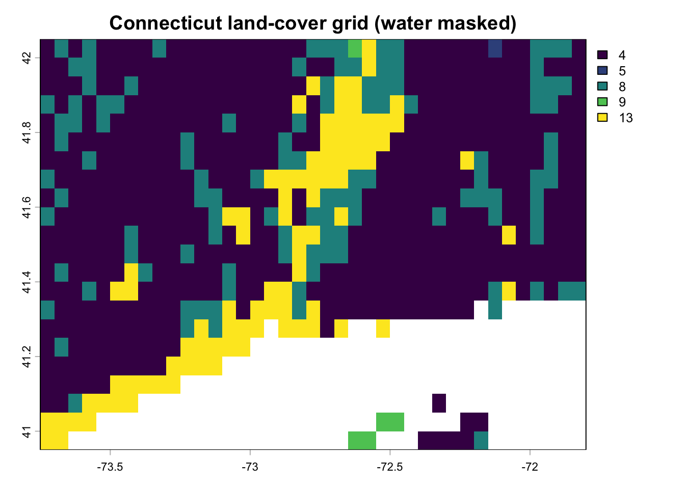
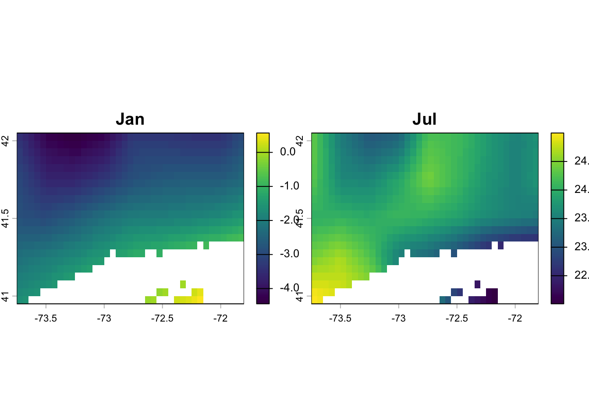
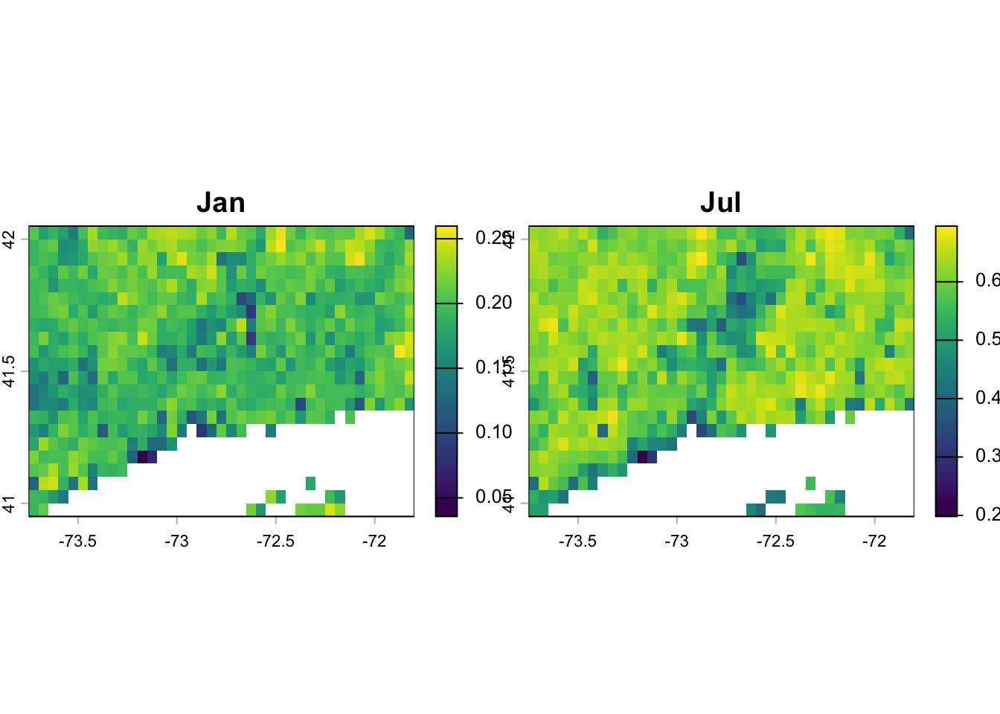
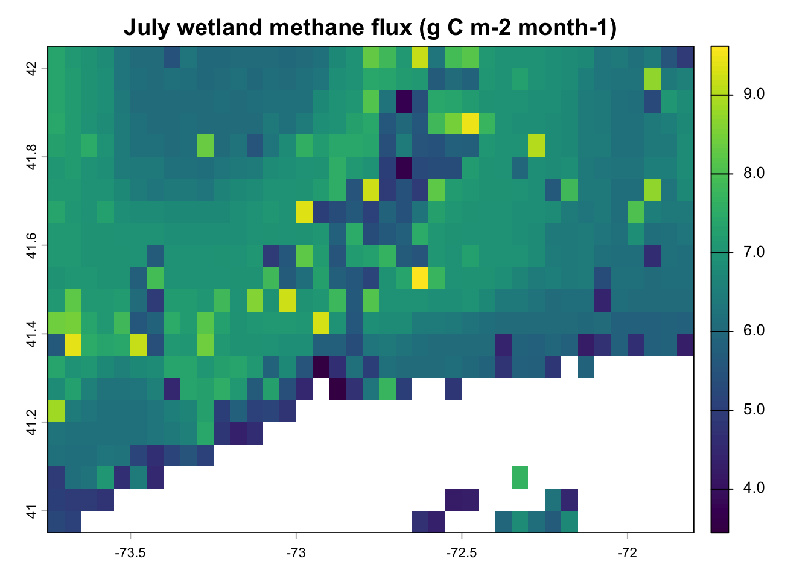
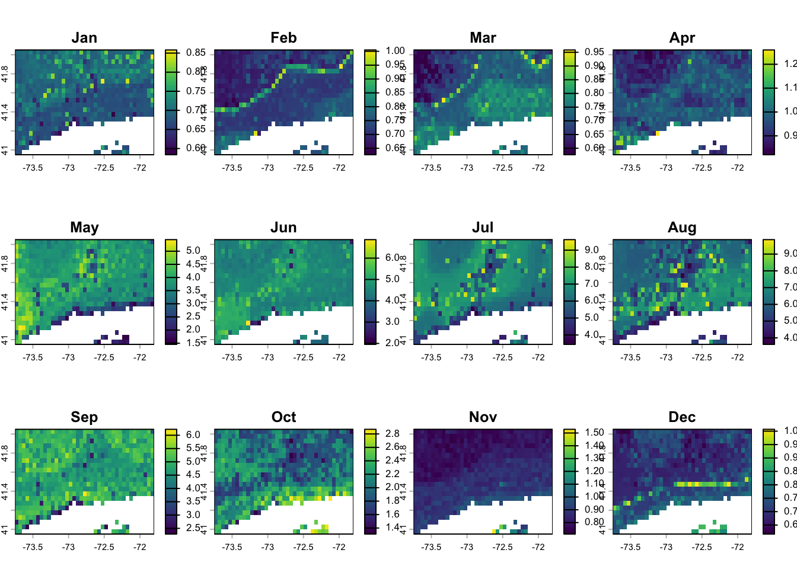
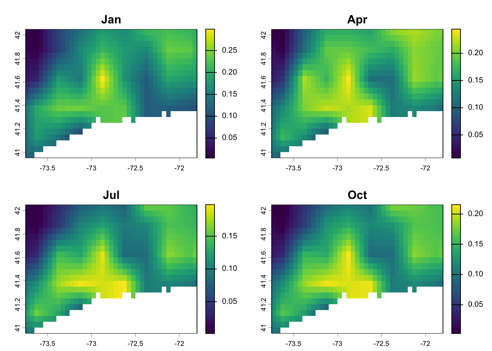
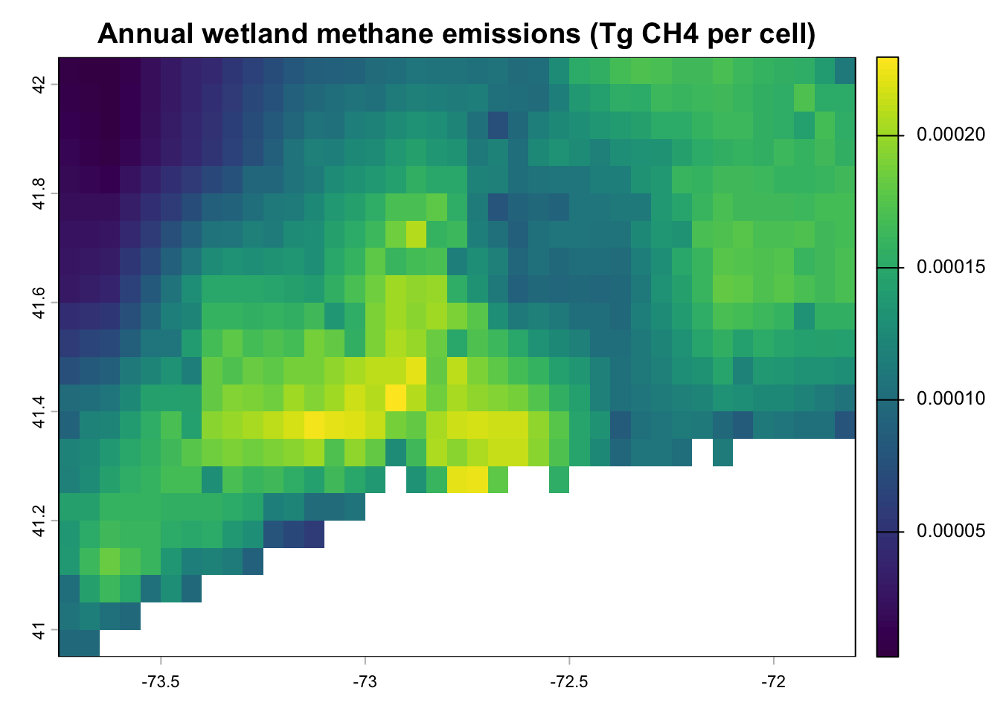
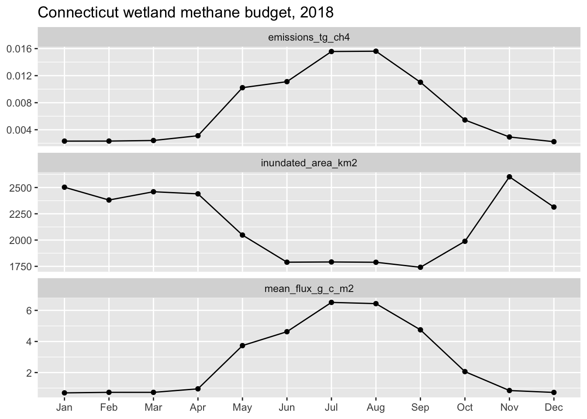
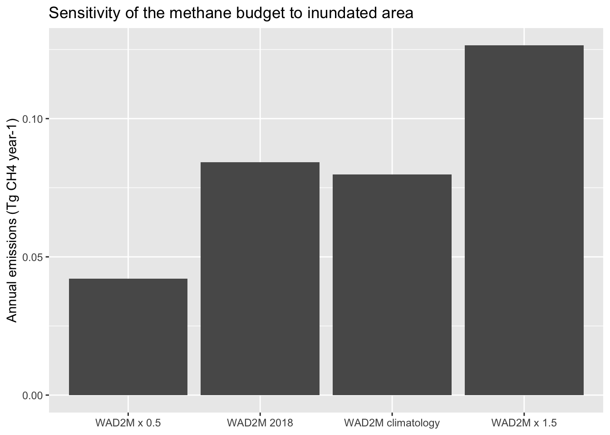
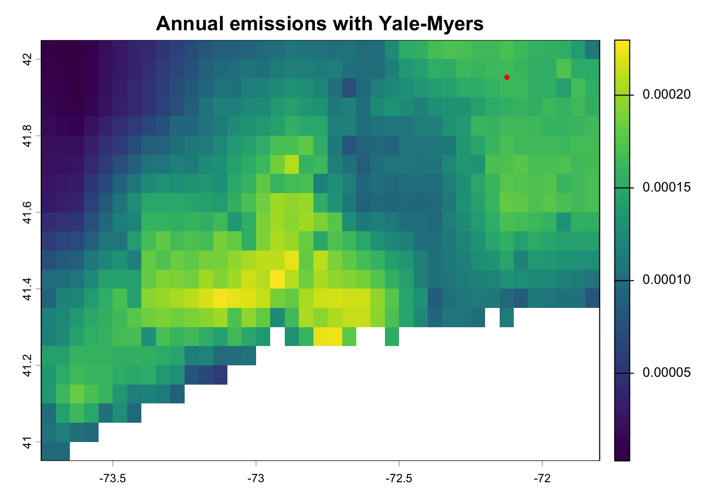

library(randomForest)
library(terra)
library(tidyverse)Spatial Model Visualization: Scaling Methane Flux in Space
From flux density to emissions
In the Random Forest and Sensitivity Analysis workshops, we built and stress-tested a methane flux model. In this final workshop, we project that same model across Connecticut and turn gridded flux predictions into a methane emissions budget.
The key idea is a unit conversion:
methane flux density x inundated area = methane emissions
Our random forest predicts methane flux as g C m-2 month-1, a rate per square meter. A map of predicted flux is not yet an emissions budget. To estimate emissions, we multiply by the area where methane-producing wetlands are actually inundated.
That is where the Wetland Area and Dynamics for Methane Modeling (WAD2M) product comes in. WAD2M provides monthly inundated-wetland fractions on a global 0.25 degree grid (Zhang et al. 2021). Version 2.0 covers 2000–2020. The NASA UpCH4 methane product uses the same strategy we use here: predict a wetland flux everywhere, then weight it by the WAD2M wetland fraction before converting to emissions.
Useful references:
- WAD2M paper: Zhang et al. 2021, Earth System Science Data
- WAD2M data: Zenodo record
- Example methane upscaling product using WAD2M: NASA Open Data Portal, UpCH4
WarningData dependencies
data/products/random_forest_model.RDATA: the final model saved byrandom_forest.qmd(also created bysensitivity.qmd).data/products/era5_tmean_monthly.tif: ERA5 temperature saved indata_integration.qmd.data/products/modis_evi_ct_2018.tif: monthly 2018 MODIS EVI for Connecticut.data/products/wad2m_fw_ct_2000-2020.tif: WAD2M v2.0 monthly inundated fraction, cropped to Connecticut.
The appendix shows how the last two were made.
ImportantDownload from Canvas before class
Download these two files from Canvas and save them in your data/products/ folder:
modis_evi_ct_2018.tifwad2m_fw_ct_2000-2020.tif
The workshop will not run without them.
By the end of this workshop, you will be able to:
- Match model predictors to spatial layers with the right names, units, and classes.
- Align predictor rasters to a common grid.
- Predict monthly wetland methane flux density in space.
- Use WAD2M to find where and when wetlands are inundated.
- Convert flux density to monthly and annual emissions in
g C,Tg C, andTg CH4. - Compare budgets with and without inundation scaling, and test sensitivity to inundated area.
- Extract predictions and emissions for the Yale-Myers Forest grid cell.
Load libraries
1. Load the model and list its spatial needs
Load the same final model used in the Sensitivity Analysis workshop:
model_file <- "data/products/random_forest_model.RDATA"
if (!file.exists(model_file)) {
stop("Render random_forest.qmd or sensitivity.qmd first; they save ", model_file)
}
load(model_file)
final_formulaFCH4_F_gC ~ TA_F + IGBP_model + EVIlevels(train$IGBP_model)[1] "CRO" "EBF" "ENF" "GRA" "Other" "WET" To project this model in space, every predictor needs a value in every grid cell:
| Model variable | Meaning | Unit or class | Spatial source |
|---|---|---|---|
TA_F |
Monthly mean air temperature | degrees C | ERA5 |
EVI |
Monthly enhanced vegetation index | unitless (−1 to 1) | MODIS |
IGBP_model |
Ecosystem class | factor: CRO, EBF, ENF, GRA, Other, WET |
set to WET |
The prediction has units of g C m-2 month-1.
NoteWhy set every cell to
WET?
We are not asking what methane flux a forest or a cornfield produces. We are asking how much methane the wetlands in each grid cell would emit. So we predict a wetland flux everywhere (IGBP_model = "WET"), then let WAD2M decide how much of each cell is actually inundated wetland. Upland cells end up with an inundated fraction near zero, so they contribute almost nothing to the budget.
This is the same logic used in global wetland methane products. It also avoids a mismatch: our model’s ecosystem classes come from tower sites, while MODIS land cover is mapped at 5 km and rarely labels Connecticut’s small, scattered wetlands as WET.
2. Build the Connecticut prediction grid
Use the provided MODIS land-cover raster as the target grid (0.05 degrees, about 5 km). Mask open water (class 0), where EVI and the model are not meaningful.
ct_grid <- rast("data/MODIS_IGBP_2001-2022_CT.tif")[[2018 - 2001 + 1]]
crs(ct_grid) <- "EPSG:4326"
ct_grid[ct_grid == 0] <- NA
names(ct_grid) <- "land"
plot(ct_grid, main = "Connecticut land-cover grid (water masked)")
3. Prepare the predictor layers
Temperature. Keep the 2018 ERA5 layers, crop to the region, and resample from 0.25 degrees to the 0.05 degree grid. Cropping the global file is slow, so save the cropped version the first time and reuse it.
tmean_ct_file <- "data/products/era5_tmean_ct_2018.tif"
if (!file.exists(tmean_ct_file)) {
era5_tmean_all <- rast("data/products/era5_tmean_monthly.tif")
era5_tmean_all[[grepl("2018", names(era5_tmean_all))]] %>%
crop(ext(-75, -70.5, 40, 43)) %>%
writeRaster(tmean_ct_file, overwrite = TRUE)
}
ta_f <- rast(tmean_ct_file) %>%
resample(ct_grid, method = "bilinear") %>%
mask(ct_grid)
names(ta_f) <- month.abb
plot(ta_f[[c(1, 7)]])
EVI. The EVI layers are already on the Connecticut grid:
evi <- rast("data/products/modis_evi_ct_2018.tif") %>%
resample(ct_grid, method = "bilinear") %>%
mask(ct_grid)
names(evi) <- month.abb
plot(evi[[c(1, 7)]])
Confirm the layers line up:
compareGeom(ct_grid, ta_f, evi)[1] TRUE
NoteWhat to look for: predictor layers
- Seasonality. Temperature and EVI should both peak in summer. January EVI near zero (or slightly negative under snow) is expected.
- Spatial pattern. Temperature is smooth because ERA5 is coarse (about 25 km). EVI shows more detail: urban areas and the coast are lower, and forested uplands are higher.
- Training domain. Compare these ranges with the training data in the next chunk. The model can only learn from conditions in the training data.
Check whether the mapped predictors fall inside the model’s training range:
domain_check <- tibble(
predictor = c("TA_F", "EVI"),
train_min = c(min(train$TA_F), min(train$EVI)),
train_max = c(max(train$TA_F), max(train$EVI)),
map_min = c(global(min(ta_f), "min", na.rm = TRUE)[1, 1], global(min(evi), "min", na.rm = TRUE)[1, 1]),
map_max = c(global(max(ta_f), "max", na.rm = TRUE)[1, 1], global(max(evi), "max", na.rm = TRUE)[1, 1])
) %>%
mutate(inside_domain = map_min >= train_min & map_max <= train_max)
domain_check# A tibble: 2 × 6
predictor train_min train_max map_min map_max inside_domain
<chr> <dbl> <dbl> <dbl> <dbl> <lgl>
1 TA_F -37.2 31.3 -4.45 25.2 TRUE
2 EVI -0.155 0.721 0.0171 0.709 TRUE 4. Predict monthly flux density
Build the predictor stack for one month. IGBP_model is passed as a constant with the same factor levels as the training data. randomForest refuses to predict if the levels don’t match.
wetland_class <- data.frame(
IGBP_model = factor("WET", levels = levels(train$IGBP_model))
)
predict_month <- function(i) {
stack <- c(ta_f[[i]], evi[[i]])
names(stack) <- c("TA_F", "EVI")
terra::predict(stack, fch4_rf, const = wetland_class, na.rm = TRUE)
}
flux_jul <- predict_month(7)
plot(flux_jul, main = "July wetland methane flux (g C m-2 month-1)")
Predict all 12 months:
flux <- rast(lapply(1:12, predict_month))
names(flux) <- month.abb
units(flux) <- "g C m-2 month-1"
plot(flux)
NoteWhat to look for: flux density maps
- These maps show the flux per square meter of wetland, not per square meter of land. A high value does not mean a cell emits a lot. It means the wetlands there would emit a lot if present.
- Summer months should be highest, driven by temperature and greenness. Compare the seasonal range with the one-at-a-time sensitivity curves from last week.
- Spatial differences within a month are small because temperature varies smoothly and EVI has a modest effect. Most of the spatial pattern in emissions will come from WAD2M.
5. Where are wetlands inundated? WAD2M
WAD2M gives the fraction of each grid cell that is inundated wetland in each month:
0means no inundated wetland in the cell.0.10means 10% of the cell is inundated wetland.1means the whole cell is inundated wetland.
WAD2M excludes permanent open water such as lakes, rivers, and the ocean, so it isolates vegetated wetlands, which are the methane source our model describes.
Load the Connecticut WAD2M series. The layer names are YYYY-MM.
wad2m_all <- rast("data/products/wad2m_fw_ct_2000-2020.tif")
range(names(wad2m_all))[1] "2000-01" "2020-12"WAD2M leaves some cells empty (NA) in winter, where snow and ice prevent mapping inundation. To fill those gaps, first build a monthly climatology: the average January across 2000–2020, the average February, and so on, ignoring missing values.
wad2m_month <- as.integer(substr(names(wad2m_all), 6, 7))
wad2m_climatology <- tapp(wad2m_all, index = wad2m_month, fun = mean, na.rm = TRUE)
names(wad2m_climatology) <- month.abbSelect 2018, fill winter gaps with the climatology (cover() replaces NA cells only), then put it on the prediction grid:
to_ct_grid <- function(r) {
r %>%
resample(ct_grid, method = "bilinear") %>%
clamp(lower = 0, upper = 1, values = TRUE) %>%
mask(ct_grid)
}
wad2m_2018 <- wad2m_all[[grepl("^2018", names(wad2m_all))]]
wad2m <- cover(wad2m_2018, wad2m_climatology) %>% to_ct_grid()
climatology_ct <- to_ct_grid(wad2m_climatology)
names(wad2m) <- names(climatology_ct) <- month.abb
plot(wad2m[[c(1, 4, 7, 10)]])
tibble(month = month.abb,
fraction_2018 = global(wad2m, "mean", na.rm = TRUE)[, 1],
fraction_climatology = global(climatology_ct, "mean", na.rm = TRUE)[, 1])# A tibble: 12 × 3
month fraction_2018 fraction_climatology
<chr> <dbl> <dbl>
1 Jan 0.166 0.157
2 Feb 0.158 0.161
3 Mar 0.163 0.159
4 Apr 0.162 0.152
5 May 0.136 0.124
6 Jun 0.119 0.116
7 Jul 0.119 0.110
8 Aug 0.119 0.113
9 Sep 0.116 0.115
10 Oct 0.132 0.120
11 Nov 0.173 0.141
12 Dec 0.154 0.152
NoteWhat to look for: WAD2M
- Where. Higher fractions should follow river valleys (for example, the Connecticut River), coastal marshes, and low-lying terrain. Most upland cells are near zero.
- When. Inundated area is largest in winter and spring, when evapotranspiration is low and snowmelt arrives, and smallest in late summer. That is the opposite of the flux-density cycle, so the two partly cancel in the budget.
- 2018 vs. average. Compare
fraction_2018withfraction_climatologyto see whether 2018 was a wet or dry year for wetlands. - Resolution. WAD2M is 0.25 degrees (about 25 km). Resampling to 5 km makes smoother maps but adds no new information about where individual wetlands are.
NoteIf your target year is not available
WAD2M v2.0 ends in 2020. If your final project needs a later year, use climatology_ct in place of wad2m. It keeps the seasonal cycle of wetland area, even though it can’t capture the conditions of that specific year. Say so in your methods. For example: “Because WAD2M was unavailable for the target year, monthly inundation fractions were estimated as the mean WAD2M fraction for each calendar month across 2000–2020.”
6. Convert flux density to emissions
Keep units visible as you work:
| Quantity | Calculation | Unit |
|---|---|---|
| flux density | random forest prediction | g C m-2 month-1 |
| cell area | cellSize() |
m2 |
| inundated area | cell area x WAD2M fraction | m2 |
| monthly emissions | flux density x inundated area | g C month-1 |
| annual emissions | sum of months / 1e12 | Tg C year-1 |
| annual emissions | Tg C x 16 / 12 | Tg CH4 year-1 |
Calculate cell area and monthly inundated area:
cell_area_m2 <- cellSize(ct_grid, unit = "m") %>% mask(ct_grid)
inundated_area_m2 <- wad2m * cell_area_m2
names(inundated_area_m2) <- month.abb
global(inundated_area_m2, "sum", na.rm = TRUE) / 1e6 # km2 sum
Jan 2502.845
Feb 2380.901
Mar 2459.785
Apr 2439.703
May 2047.657
Jun 1789.448
Jul 1791.635
Aug 1788.793
Sep 1741.068
Oct 1988.379
Nov 2601.958
Dec 2313.929Convert flux density to emissions, then sum to an annual map:
emissions_g_c <- flux * inundated_area_m2
names(emissions_g_c) <- month.abb
annual_tg_ch4 <- sum(emissions_g_c) / 1e12 * (16 / 12)
names(annual_tg_ch4) <- "annual_tg_ch4"
plot(annual_tg_ch4, main = "Annual wetland methane emissions (Tg CH4 per cell)")
Tg CH4 = Tg C x 16 / 12 because methane has a molecular mass of 16 and carbon has an atomic mass of 12.
NoteWhat to look for: emissions map
Compare this map with the flux-density maps. The emission hotspots should follow the WAD2M wetland pattern, not the flux pattern. That shows that wetland area, not flux density, controls where methane is emitted at this scale.
7. Build the Connecticut budget
monthly_budget <- tibble(
month = factor(month.abb, levels = month.abb),
mean_flux_g_c_m2 = global(flux, "mean", na.rm = TRUE)[, 1],
inundated_area_km2 = global(inundated_area_m2, "sum", na.rm = TRUE)[, 1] / 1e6,
emissions_tg_ch4 = global(emissions_g_c, "sum", na.rm = TRUE)[, 1] / 1e12 * (16 / 12)
)
monthly_budget# A tibble: 12 × 4
month mean_flux_g_c_m2 inundated_area_km2 emissions_tg_ch4
<fct> <dbl> <dbl> <dbl>
1 Jan 0.694 2503. 0.00232
2 Feb 0.728 2381. 0.00232
3 Mar 0.727 2460. 0.00241
4 Apr 0.954 2440. 0.00311
5 May 3.73 2048. 0.0102
6 Jun 4.63 1789. 0.0111
7 Jul 6.51 1792. 0.0156
8 Aug 6.43 1789. 0.0156
9 Sep 4.75 1741. 0.0110
10 Oct 2.06 1988. 0.00544
11 Nov 0.845 2602. 0.00293
12 Dec 0.723 2314. 0.00223annual_budget_tg_ch4 <- sum(monthly_budget$emissions_tg_ch4)
annual_budget_tg_ch4[1] 0.08430414Plot the three pieces of the budget together:
monthly_budget %>%
pivot_longer(-month) %>%
ggplot(aes(x = month, y = value, group = name)) +
geom_line() +
geom_point() +
facet_wrap(~ name, ncol = 1, scales = "free_y") +
labs(title = "Connecticut wetland methane budget, 2018", x = NULL, y = NULL)
NoteHow to interpret the monthly budget
- Emissions = flux density x inundated area, so the emissions curve is a compromise between the two other panels.
- If emissions peak in summer, flux density is driving the budget. If the peak shifts toward spring, inundated area matters more.
- Ask how much of the annual total comes from the warmest three months. That tells you how much the budget depends on summer temperature, where the sensitivity analysis showed the model is most responsive.
8. Why WAD2M scaling matters
Compare the WAD2M-scaled budget with a naive budget that treats every land cell as 100% wetland:
naive_tg_ch4 <- global(sum(flux * cell_area_m2), "sum", na.rm = TRUE)[1, 1] / 1e12 * (16 / 12)
comparison_budget <- tibble(
method = c("100% of each land cell", "WAD2M inundated fraction"),
annual_tg_ch4 = c(naive_tg_ch4, annual_budget_tg_ch4)
) %>%
mutate(percent_of_naive = 100 * annual_tg_ch4 / first(annual_tg_ch4))
comparison_budget# A tibble: 2 × 3
method annual_tg_ch4 percent_of_naive
<chr> <dbl> <dbl>
1 100% of each land cell 0.671 100
2 WAD2M inundated fraction 0.0843 12.6
NoteHow to interpret the comparison
percent_of_naive is roughly the average inundated fraction, weighted by flux. A naive budget assumes the whole state is a wetland and overestimates emissions by about 1 / (inundated fraction). This is the most common mistake when scaling tower fluxes to regions.
9. Inundation-area uncertainty
Wetland area is often the largest source of uncertainty in methane budgets. How much does the budget change if inundation is 50% lower or higher than WAD2M, or if we use the 2000–2020 climatology instead of 2018?
budget_from_fraction <- function(fraction) {
fraction <- clamp(fraction, lower = 0, upper = 1, values = TRUE)
global(sum(flux * fraction * cell_area_m2), "sum", na.rm = TRUE)[1, 1] / 1e12 * (16 / 12)
}
budget_uncertainty <- tibble(
scenario = c("WAD2M x 0.5", "WAD2M 2018", "WAD2M climatology", "WAD2M x 1.5"),
annual_tg_ch4 = c(budget_from_fraction(wad2m * 0.5),
budget_from_fraction(wad2m),
budget_from_fraction(climatology_ct),
budget_from_fraction(wad2m * 1.5))
)
budget_uncertainty# A tibble: 4 × 2
scenario annual_tg_ch4
<chr> <dbl>
1 WAD2M x 0.5 0.0422
2 WAD2M 2018 0.0843
3 WAD2M climatology 0.0798
4 WAD2M x 1.5 0.126 budget_uncertainty %>%
ggplot(aes(x = fct_inorder(scenario), y = annual_tg_ch4)) +
geom_col() +
labs(title = "Sensitivity of the methane budget to inundated area",
x = NULL,
y = "Annual emissions (Tg CH4 year-1)")
NoteHow to interpret the uncertainty test
- Because emissions = flux x area, the budget scales linearly with inundated area: ±50% area gives ±50% emissions (unless clamping at 1 matters).
- The climatology bar shows how unusual 2018 was compared with an average year. If the difference is small, a climatology is a reasonable substitute for a missing year.
- This isolates only one source of uncertainty. A full analysis would also include model error (test RMSE), predictor-raster error, and the choice to treat all inundated area as
WET.
10. Extract Yale-Myers Forest
These values represent the 5 km grid cell containing Yale-Myers (and WAD2M information from the surrounding 25 km cell), not a field measurement.
yale_myers <- vect(data.frame(lon = -72.123859, lat = 41.952909),
geom = c("lon", "lat"), crs = "EPSG:4326")
plot(annual_tg_ch4, main = "Annual emissions with Yale-Myers")
points(yale_myers, pch = 16, col = "red")
extract_monthly <- function(r, value_name) {
terra::extract(r, yale_myers, ID = FALSE) %>%
pivot_longer(everything(), names_to = "month", values_to = value_name)
}
yale_myers_monthly <- extract_monthly(flux, "flux_g_c_m2") %>%
left_join(extract_monthly(wad2m, "inundated_fraction"), by = "month") %>%
left_join(extract_monthly(emissions_g_c, "emissions_g_c"), by = "month") %>%
mutate(month = factor(month, levels = month.abb))
yale_myers_monthly# A tibble: 12 × 4
month flux_g_c_m2 inundated_fraction emissions_g_c
<fct> <dbl> <dbl> <dbl>
1 Jan 0.739 0.227 3856230.
2 Feb 0.766 0.220 3873820.
3 Mar 0.757 0.213 3716916.
4 Apr 0.904 0.216 4492501.
5 May 3.84 0.183 16151958.
6 Jun 4.52 0.156 16187246.
7 Jul 6.47 0.152 22669278.
8 Aug 6.12 0.148 20849190.
9 Sep 5.14 0.149 17580553.
10 Oct 1.74 0.170 6791341.
11 Nov 0.839 0.227 4373998.
12 Dec 0.799 0.197 3625851.sum(yale_myers_monthly$emissions_g_c) / 1e6 * (16 / 12) # t CH4 per year[1] 165.5585
NoteWhat to look for: Yale-Myers
- Compare the Yale-Myers inundated fraction with the state average. Is this cell wetter or drier than typical Connecticut?
- Small wetlands, beaver ponds, and stream margins at Yale-Myers are much smaller than a WAD2M grid cell. Think about whether the coarse fraction is likely to over- or underestimate wetland area there.
- Recall the scenario flags from the Sensitivity workshop. Are the Yale-Myers temperature and EVI conditions inside the training domain?
11. Save products
writeRaster(flux, "data/products/ct_wetland_flux_g_c_m2_2018.tif", overwrite = TRUE)
writeRaster(annual_tg_ch4, "data/products/ct_annual_methane_emissions_tg_ch4_2018.tif", overwrite = TRUE)
TipCourse product
This workshop produces a spatial methane visualization and emissions budget. Use the standard deliverable shape from the Final Project Roadmap, with extra emphasis on unit conversions, inundation-area scaling, and reproducibility of spatial products.
Assignment
For your final project, prepare a spatial methane visualization and budget. Include:
- Your model formula and a table of each spatial predictor: layer name, units, resolution, and source.
- A training-domain check for the mapped predictors.
- A map of predicted flux density (
g C m-2 month-1) and a map of WAD2M inundated fraction. - A unit-conversion table from flux density to
Tg CH4 year-1. - A monthly budget showing flux density, inundated area, and emissions.
- A comparison of the naive 100% area budget and the WAD2M-scaled budget.
- A simple inundation-area uncertainty analysis.
- A Yale-Myers or target-site extraction table.
- One paragraph explaining why inundated area changes the interpretation of a spatial methane flux map.
Appendix: how the provided layers were made
These steps were run once to create the provided files. You only need them if you want a different region or year.
WAD2M. Download WAD2M_wetlands_2000-2020_025deg_Ver2.0.nc.zip from the Zenodo record (about 275 MB, 1.9 GB unzipped), then:
wad2m_global <- rast("WAD2M_wetlands_2000-2020_025deg_Ver2.0.nc") # variable Fw
wad2m_ct <- crop(wad2m_global, ext(-75, -70.5, 40, 43))
names(wad2m_ct) <- format(time(wad2m_ct), "%Y-%m")
writeRaster(wad2m_ct, "data/products/wad2m_fw_ct_2000-2020.tif", overwrite = TRUE)EVI. The model was trained on MODIS EVI (scaled −1 to 1). The Connecticut layers were built from MODIS Terra MOD13A1 v061 (500 m, 16-day) for tile h12v04, 2018. Composites were assigned to the month of their midpoint, averaged within each month after removing fill values (−3000) and applying the 0.0001 scale factor, then aggregated to the 0.05 degree grid. An AppEEARS area request for MOD13A3 (monthly, 1 km) over your region is an equivalent and simpler route:
evi_files <- list.files("path/to/MOD13A1_EVI_2018", pattern = "EVI.tif$", full.names = TRUE)
doy <- as.integer(str_extract(basename(evi_files), "(?<=A2018)\\d{3}"))
evi_month <- as.integer(format(as.Date(doy + 7, origin = "2017-12-31"), "%m"))
evi_ct <- rast(lapply(1:12, function(m) {
r <- rast(evi_files[evi_month == m])
r[r == -3000] <- NA
project(mean(r * 0.0001, na.rm = TRUE), ct_grid, method = "average")
}))
names(evi_ct) <- sprintf("EVI_m%02d", 1:12)
writeRaster(evi_ct, "data/products/modis_evi_ct_2018.tif", overwrite = TRUE)